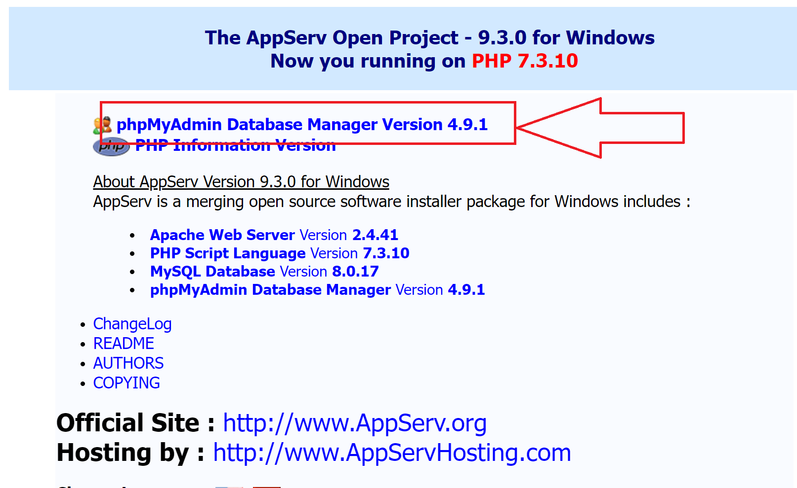

https://www.appserv.org/en/download/
從此下載
開啟EXE檔案 正常安裝之後
(安裝過程中 會要輸入 root 帳號的密碼，該密碼要記得)
在瀏覽器中 輸入 localhost
就可以進入以下畫面

按下4.9.1 (紅色框框處)
即可進入 MySQL (帳號:root 密碼:你剛剛打的密碼)
想要新增資料庫 請按左邊的NEW
有預設的資料庫，新手請不要去改，可能導致資料庫壞掉!